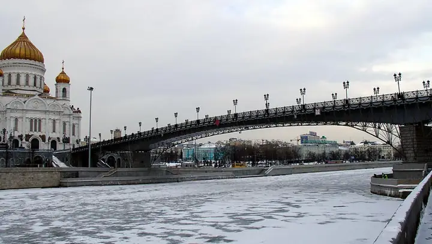

Фото: NVO, общественное достояние · Wikimedia Commons
Пешеходный мост · ЦАО
Патриарший мост
Пешеходный мост от Храма Христа Спасителя к «Красному Октябрю» с открыточным видом на Кремль.
- ₽ · до 1 500 ₽ на человека
- в 2 планах
Позвать сюда: Патриарший мостОткрыть в каталоге: Патриарший мостМаршрут до места: Патриарший мост
Адрес и детали
- Адрес
- Патриарший мост
Открыть на Яндекс Картах (в новой вкладке) - Метро
- м. Кропоткинская
- Округ
- Центр (ЦАО)
- Цена
- до 1 500 ₽ на человека
- Проверено
- работает — проверили в октябре 2026
Планы с этим местом 2
- Патриарший мост · Пешеходный мост · м. Кропоткинская
- 1 минута пешкомLui · Ресторан с видом на реку
Закат на Патриаршем мосту с видом на Кремль, а на другом берегу, у «Красного Октября», — ужин в Lui, откуда за рекой виден храм Христа Спасителя.
Открыть план: Патриарший мост и ужин у рекиПозвать сюда: Патриарший мост и ужин у реки
Фото: NVO, общественное достояние · Wikimedia Commons
- Патриарший мост · Пешеходный мост · м. Кропоткинская
- 4 минуты пешкомСыроварня · Ресторан с сыроварней
Вид на Кремль с Патриаршего моста и ужин на «Красном Октябре», где сыр варят при гостях.
Открыть план: Мост и сыроварняПозвать сюда: Мост и сыроварня
Фото: NVO, общественное достояние · Wikimedia Commons

Похожие рядом


Что ещё рядом


Как позвать
- Выбери план, место или событие — в карточке адрес, цены и маршрут в Яндекс Картах.
- Нажми «Позвать сюда» — соберётся приглашение-игра для свидания или голосование для компании.
- Отправь ссылку в любой мессенджер: тебе ответят, а компания отметит, куда и когда может. Бесплатно и без регистрации.